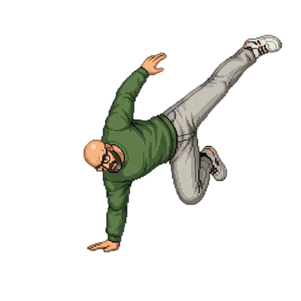
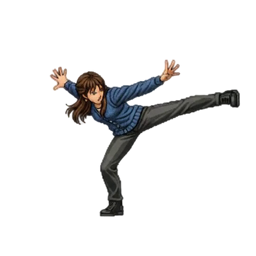
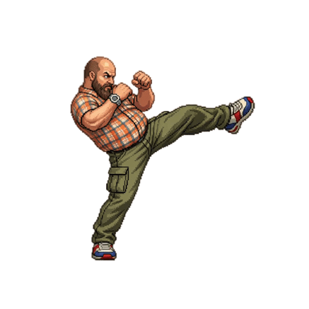
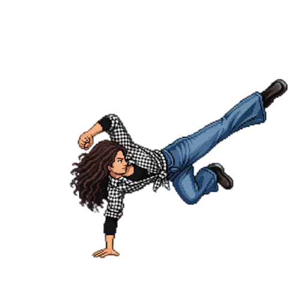
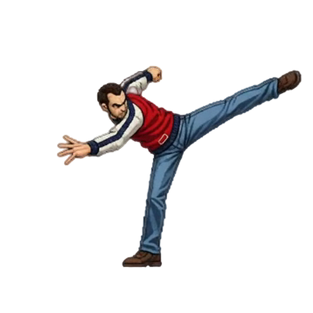
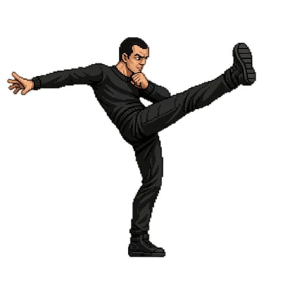
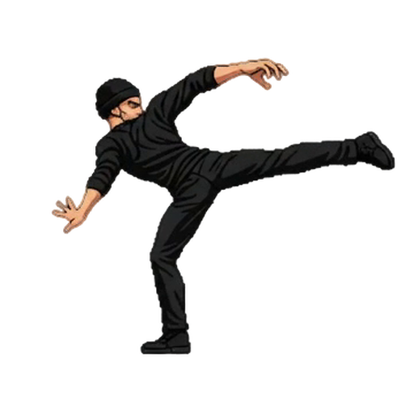
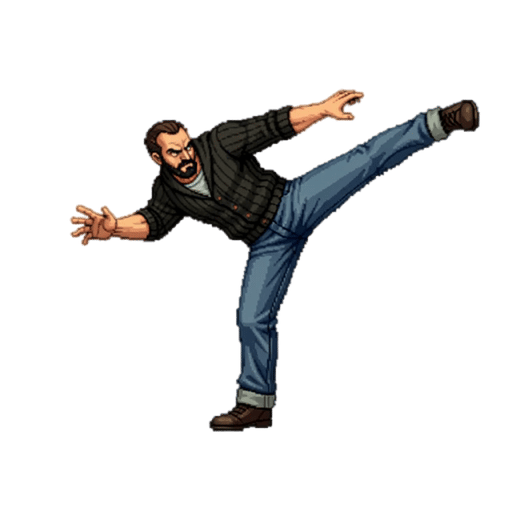
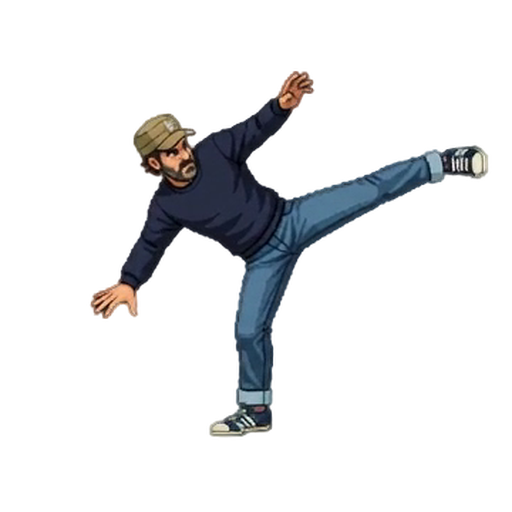

Timing Calcio potente
Aggiornamento: 2026-11-20. Integrati 9 personaggi. Il frame selezionato di massima estensione inizia a 500 ms (0,5 s) e il ciclo completo dura 900 ms (0,9 s) a velocità 1x.
Preparazione: 500 ms. Fase di impatto/recupero: 400 ms. Le durate dei fotogrammi variano nelle due fasi per sincronizzare le pose. Quando la gamba resta estesa per più fotogrammi, il marcatore identifica una posa rappresentativa del tratto di massima estensione: le pose adiacenti possono essere simili.
Riproduzione avanti fino all’ultimo frame del taglio salvato, poi ritorno al contrario senza duplicare il vertice. Il frame di impatto è l’ultimo della fase di andata; il ritorno completa la guardia iniziale. Loop attivo per default e CRT condiviso.
Fonte AutoSprite: strong kick per tutti i nove personaggi. Le ultime versioni salvate e gli intervalli selezionati sono conservati, senza modificare scala, padding o pixel delle celle 512x512.
I frame della demo partono da 1 in tabella; gli indici sorgente partono da 0 nello sheet selezionato, anche quando già accorciato. FPS medio = numero di frame × 1000 / 900; le durate effettive sono negli atlas e nel catalogo, da trasferire anche in Godot.
| Personaggio | Posa scelta | Frame demo | Frame sorgente | Impatto | Preparazione / fase successiva | Totale | Durata frame prima / dopo | Provenienza e note |
|---|---|---|---|---|---|---|---|---|
| ALBERTO |  | 21 / 41 | 20 | 500 ms | 500 / 400 ms | 900 ms | 25.000 / 19.048 ms | cmwove8tr002k7frnqksgp5bjUltimo frame del taglio salvato come posa di impatto; ritorno al contrario senza duplicare il vertice. |
| Elisa |  | 35 / 69 | 34 | 500 ms | 500 / 400 ms | 900 ms | 14.706 / 11.429 ms | cmwovv89r002rlqp4dujpwup7Ultimo frame del taglio salvato come posa di impatto; ritorno al contrario senza duplicare il vertice. |
| FABIO-CLARA |  | 14 / 27 | 13 | 500 ms | 500 / 400 ms | 900 ms | 38.462 / 28.571 ms | cmwovgsiq00u9au3gzw5qzxuoUltimo frame del taglio salvato come posa di impatto; ritorno al contrario senza duplicare il vertice. |
| FRA-TAVARONE |  | 17 / 33 | 16 | 500 ms | 500 / 400 ms | 900 ms | 31.250 / 23.529 ms | cmwovv7ia00y5au3gj5nzekbyUltimo frame del taglio salvato come posa di impatto; ritorno al contrario senza duplicare il vertice. |
| MARSAN |  | 27 / 53 | 26 | 500 ms | 500 / 400 ms | 900 ms | 19.231 / 14.815 ms | cmwow13l8008j12mgm8tje4ktUltimo frame del taglio salvato come posa di impatto; ritorno al contrario senza duplicare il vertice. |
| Oscar |  | 22 / 43 | 21 | 500 ms | 500 / 400 ms | 900 ms | 23.810 / 18.182 ms | cmwouvmse00u0au3g4vozdx81Ultimo frame del taglio salvato come posa di impatto; ritorno al contrario senza duplicare il vertice. |
| PEPPO |  | 18 / 35 | 17 | 500 ms | 500 / 400 ms | 900 ms | 29.412 / 22.222 ms | cmwovs3wx00au7frn2b95uejhUltimo frame del taglio salvato come posa di impatto; ritorno al contrario senza duplicare il vertice. |
| PIPPO |  | 17 / 33 | 16 | 500 ms | 500 / 400 ms | 900 ms | 31.250 / 23.529 ms | cmwovk6fs002p12a3w1gjpi70Ultimo frame del taglio salvato come posa di impatto; ritorno al contrario senza duplicare il vertice. |
| SBOZ |  | 25 / 49 | 24 | 500 ms | 500 / 400 ms | 900 ms | 20.833 / 16.000 ms | cmwovm9f7006j12mgeww7llfyUltimo frame del taglio salvato come posa di impatto; ritorno al contrario senza duplicare il vertice. |